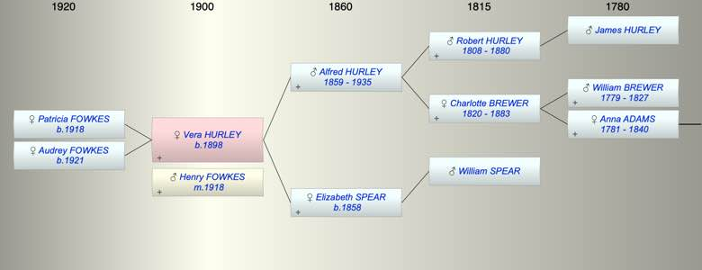

| [Index] |
| Vera Hilda Mary HURLEY (1898 - ) |
|  |
| b. 1898 at Exeter |
| m. 1918 Henry Arthur FOWKES at Chester |
| Near Relatives of Vera Hilda Mary HURLEY (1898 - ) | ||||||
| Relationship | Person | Born | Birth Place | Died | Death Place | Age |
| Grandfather | Robert HURLEY | 10 Dec 1808 | Bamford Speke, Devon | 23 Nov 1880 | 71 | |
| Grandmother | Charlotte BREWER | 19 Aug 1820 | Exminster | 29 Oct 1883 | 63 | |
| Grandfather | William SPEAR | |||||
| Father | Alfred Robert HURLEY | 14 Aug 1859 | Alphington | 1935 | 76 | |
| Mother | Elizabeth SPEAR | 1858 | Petrockstowe Devon | |||
| Self | Vera Hilda Mary HURLEY | 1898 | Exeter | |||
| Husband | Henry Arthur FOWKES | |||||
| Daughter | Patricia Mary FOWKES | 1918 | Manchester | |||
| Daughter | Audrey Sheila FOWKES | 1921 | Altricham | |||
| Brother | Alfred Willam HURLEY | 1887 | Devonport | |||
| Brother | Living or Recently Deceased | |||||
| Sister | Living or Recently Deceased | |||||
| Aunt | Alice Sarah HURLEY | 13 Nov 1853 | Alphington | 1939 | 86 | |
| Uncle | Frank MAYNE | |||||
| Cousin | Arthur H MAYNE | 1872 | Alphington | |||
| Cousin | WIlliam R MAYNE | 1876 | Alphington | |||
| Cousin | Francis A MAYNE | 1878 | Alphington | |||
| Cousin | Frederick G MAYNE | 1880 | Alphington | |||
| Cousin | Frank C MAYNE | 1893 | Alphington | |||
| Cousin | James E MAYNE | 1895 | Alphington | |||
| Nephew | Living or Recently Deceased | |||||
| Nephew | Ronald A COLE | 10 Dec 1920 | ||||
| Brother in Law | Charles Thomas COLE | 20 Apr 1891 | ||||
| Events in Vera Hilda Mary HURLEY (1898 - )'s life | |||||
| Date | Age | Event | Place | Notes | Src |
| 1898 | Vera Hilda Mary HURLEY was born | Exeter | |||
| 1918 | 20 | Birth of daughter Patricia Mary FOWKES | Manchester | ||
| 1918 | 20 | Married Henry Arthur FOWKES | Chester | ||
| 1921 | 23 | Birth of daughter Audrey Sheila FOWKES | Altricham | ||
| 1935 | 37 | Death of father Alfred Robert HURLEY (aged 76) | |||
| Personal Notes: |
| 1921 Census living Altrincham, Cheshire 24 born Exeter with her husrband Henry Arthur Fowkes 34 born West Didsbury, LAncs and thier daughters Patricia Mary 2 born Manchester and Audrey Sheila months old born Altricham, Cheshire |
| Created on a Mac™ using iFamily for Mac™ on 15 Sep 2023 |